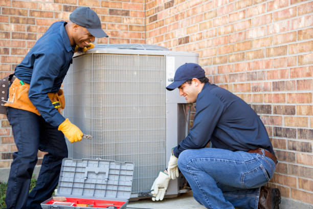

Wesley Chapel's Leading Ductless Mini Split Specialists
Wesley Chapel, Florida's premier ductless mini split service provider brings comprehensive expertise to one of the Tampa Bay area's fastest-growing communities. Our certified HVAC technicians understand Wesley Chapel's unique blend of master-planned communities, new construction, and modern suburban lifestyle, providing customized ductless solutions that enhance comfort, reduce energy costs, and improve air quality for Wesley Chapel families and businesses in this thriving northern Hillsborough County community.
Complete Wesley Chapel Service Coverage
Our comprehensive Wesley Chapel ductless mini split services extend throughout the entire community and surrounding areas, including New Tampa, Meadow Pointe, Seven Oaks, Cypress Creek, Quail Hollow, Wiregrass Ranch, Arbor Greene, Connerton, Chapel Pines, Cross Creek, Lexington Oaks, and all new developments throughout northern Hillsborough County. We're experienced with Wesley Chapel's predominantly new construction and modern architectural styles that complement ductless technology perfectly.
Wesley Chapel's zip codes in our comprehensive service area include 33543, 33544, 33559, 33592, and surrounding areas. Our local expertise ensures complete understanding of Wesley Chapel's building codes, homeowner association requirements, and modern construction techniques that optimize ductless system performance and installation efficiency.
Wesley Chapel Climate and Modern Development
Wesley Chapel's inland subtropical climate and elevation create ideal conditions for ductless mini split systems throughout the year. With summer temperatures reaching the mid-90s and winter lows in the 40s-50s, Wesley Chapel residents benefit from ductless technology's superior efficiency during Florida's extended cooling season and reliable heating during occasionally cool winter periods.
The community's modern development and energy-efficient construction standards create optimal environments for ductless installation and operation. Wesley Chapel's newer homes often feature open floor plans, high ceilings, and architectural elements that ductless systems condition more effectively than traditional central air systems.
Master-Planned Community Advantages
Wesley Chapel's numerous master-planned communities feature consistent architectural guidelines, energy-efficient construction, and modern infrastructure that complement ductless mini split technology. These communities often include deed restrictions and architectural review processes that ductless installations can meet while providing superior comfort and efficiency.
New construction in master-planned communities frequently includes features like bonus rooms, media rooms, home offices, and flexible living spaces that benefit tremendously from ductless technology's zone-specific control and flexible installation options.
New Construction and Energy Efficiency Excellence
Wesley Chapel's continuous new construction provides ideal opportunities for ductless mini split installations designed from the ground up for optimal performance. We work with Wesley Chapel builders, architects, and homeowners to integrate ductless systems seamlessly into new homes, maximizing efficiency while minimizing installation costs.
New construction installations allow for optimal ductless system design including discrete outdoor unit placement, integrated control systems, and architectural coordination that maximizes both performance and aesthetic appeal. Wesley Chapel's modern homes showcase ductless technology's advanced capabilities and design flexibility.
Smart Home Integration and Technology
Wesley Chapel's tech-savvy residents and new construction market embrace the advanced smart home integration capabilities available with modern ductless systems. Wi-Fi enabled units integrate seamlessly with popular home automation platforms, providing remote control, intelligent scheduling, and comprehensive energy monitoring capabilities.
Whole-home automation integration is particularly popular in Wesley Chapel's luxury communities, where ductless systems become part of comprehensive smart home ecosystems that optimize comfort, efficiency, and convenience for modern lifestyles.
Luxury Communities and Custom Homes
Wesley Chapel's luxury communities and custom home market appreciate ductless systems' ability to provide precise environmental control for specialized spaces like wine cellars, home theaters, exercise rooms, art collections, and home offices. Individual zone control enables homeowners to optimize conditions for diverse room types and usage patterns.
High-end installations in Wesley Chapel include integration with whole-home automation systems, advanced air filtration for luxury amenities, and specialized applications that demonstrate ductless technology's versatility in premium residential environments throughout the community's most exclusive neighborhoods.
Pool House and Outdoor Living Applications
Wesley Chapel's outdoor lifestyle and luxury amenities often include pool houses, outdoor kitchens, guest houses, and entertainment areas that benefit from ductless mini split technology. These applications require specialized installation techniques and weather-resistant components designed for Florida's challenging climate.
Outdoor living space applications showcase ductless technology's flexibility and efficiency in conditioning spaces that traditional central air systems cannot serve effectively. Many Wesley Chapel homeowners choose ductless for pool houses and outdoor entertainment areas due to installation flexibility and operating efficiency.
Energy Efficiency in Modern Construction
Wesley Chapel residents choosing ductless mini split systems typically experience exceptional energy savings compared to traditional HVAC systems. The combination of energy-efficient new construction and advanced ductless technology often results in 35-50% energy savings for Wesley Chapel homeowners, particularly when compared to less efficient HVAC options.
Modern construction techniques and insulation standards in Wesley Chapel create optimal environments for ductless operation, allowing systems to achieve maximum efficiency ratings and providing comfortable year-round climate control with minimal energy consumption.
Utility Programs and New Construction Incentives
Wesley Chapel residents benefit from various utility rebate programs and new construction incentives available for high-efficiency ductless installations. We assist customers in navigating programs offered by Tampa Electric Company (TECO) and other providers, helping maximize savings on ductless system purchases.
New construction often qualifies for additional incentives and rebates when incorporating high-efficiency ductless systems. Our team maintains current knowledge of all available programs and handles necessary documentation to maximize customer savings during the construction process.
Commercial and Business Park Applications
Wesley Chapel's growing commercial sector, including business parks, retail centers, professional offices, and medical facilities, benefits from ductless mini split technology's flexibility and efficiency. The community's modern commercial development showcases ductless technology's capabilities in contemporary business environments.
Professional offices, medical practices, retail stores, and service businesses throughout Wesley Chapel appreciate ductless systems' quiet operation and individual zone control that enhances customer and employee comfort while reducing operating expenses.
Healthcare and Professional Services
Wesley Chapel's expanding healthcare sector, including medical offices, dental practices, urgent care centers, and specialty practices, relies on ductless systems for precise environmental control necessary for patient comfort and equipment protection. Clean, quiet operation creates optimal environments for healthcare delivery.
Advanced filtration capabilities in ductless systems provide superior indoor air quality for medical facilities, while individual room control allows practices to optimize comfort and efficiency based on specific usage patterns and patient care requirements.
Educational and Community Facilities
Wesley Chapel's schools, community centers, and educational facilities benefit from ductless technology's ability to provide comfortable learning environments while managing operational costs effectively. Individual room control allows for optimal conditions regardless of occupancy or external weather conditions.
Quiet operation is particularly important in educational settings, where ductless systems' whisper-quiet indoor units maintain comfortable temperatures without disrupting instruction or activities. Many Wesley Chapel educational facilities report improved comfort and reduced energy costs after ductless installation.
Indoor Air Quality Excellence
Wesley Chapel's modern construction and suburban environment provide excellent baseline air quality that ductless mini split systems enhance further through superior filtration and humidity control. Multi-stage filtration systems in modern ductless units capture allergens, pollutants, and airborne contaminants that can affect indoor environments.
Many Wesley Chapel families notice improved indoor air quality and respiratory comfort after ductless installation, particularly those with allergies or respiratory sensitivities. The superior air filtration capabilities of ductless systems create healthier indoor environments for the entire family.
Humidity Control in Modern Homes
Wesley Chapel's climate requires effective humidity control for optimal comfort and health. Ductless mini split systems excel at humidity removal, often reducing indoor humidity levels by 15-25% compared to traditional systems, preventing mold growth and improving overall air quality in modern homes.
Enhanced dehumidification capabilities allow Wesley Chapel residents to maintain comfortable conditions at higher thermostat settings, further reducing energy consumption while improving comfort and preventing humidity-related problems.
Maintenance and Service Excellence
Wesley Chapel's active lifestyle and year-round HVAC usage require reliable maintenance and service support. Our comprehensive maintenance programs are specifically designed for Wesley Chapel's modern construction and usage patterns, including seasonal tune-ups, performance optimization, and proactive component replacement.
Preventive maintenance is particularly valuable in Wesley Chapel's demanding climate, where HVAC systems operate extensively throughout most of the year. Our maintenance agreements include priority service, discounted repair rates, and detailed system monitoring that ensures optimal performance and equipment longevity.
Emergency Service Capabilities
Wesley Chapel's family-focused community and business district require reliable emergency HVAC service when systems fail unexpectedly. Our 24/7 emergency ductless repair services ensure Wesley Chapel residents and businesses maintain comfort regardless of when problems occur, with dedicated emergency vehicles positioned throughout northern Hillsborough County.
Emergency services include residential and commercial facility repairs, after-hours service, weekend and holiday availability, and specialized equipment that enables most emergency repairs to be completed during the initial service call.
Environmental Responsibility and Sustainability
Wesley Chapel's environmentally conscious community and modern development practices align perfectly with ductless mini split technology's energy efficiency and reduced environmental impact. Ductless systems significantly reduce energy consumption compared to traditional HVAC systems, contributing to sustainable community development and reduced carbon footprint.
Modern refrigerants used in ductless systems have lower environmental impact than older technologies, while the extended lifespan of quality ductless equipment reduces waste. Many environmentally conscious Wesley Chapel residents choose ductless systems as part of their commitment to sustainable living.
Investment Value and Financing Options
To make ductless mini split systems accessible for all Wesley Chapel residents and businesses, we offer flexible financing options with competitive rates and terms that accommodate diverse budgets. Our financing programs enable customers to invest in high-efficiency equipment without financial strain.
All Wesley Chapel ductless installations include comprehensive warranty coverage on both equipment and workmanship. We maintain authorized service relationships with leading manufacturers, ensuring warranty compliance and access to genuine replacement parts throughout the warranty period.
Customer Satisfaction and Community Commitment
Our Wesley Chapel customers consistently praise our professionalism, expertise, and commitment to customer satisfaction. From new construction installations to existing home upgrades, Wesley Chapel residents appreciate our attention to detail, quality workmanship, and responsive customer service tailored to modern community needs.
Customer testimonials highlight our prompt response times, transparent pricing, clear communication throughout the installation and service process, and genuine commitment to customer satisfaction. We're proud to serve Wesley Chapel's growing community through consistent quality service and unwavering dedication to customer success.
Future-Ready Technology and Community Growth
As Wesley Chapel continues its rapid growth as one of Florida's premier master-planned communities, ductless systems provide the flexibility to adapt to changing residential and commercial needs. Advanced technology integration and modular design make ductless systems an excellent long-term investment for Wesley Chapel's dynamic market.
Ductless technology continues advancing with new features regularly introduced to enhance performance, efficiency, and integration capabilities. Our Wesley Chapel installations are designed to accommodate future upgrades and changing needs as the community continues its evolution as a model for modern suburban development.
For Wesley Chapel residents and businesses seeking superior comfort, efficiency, and reliability in their HVAC systems, ductless mini splits represent the ideal solution for this modern Florida community. Contact our Wesley Chapel specialists today to discover how ductless technology can transform your property's comfort while reducing energy costs and supporting sustainable living in one of Tampa Bay's most desirable communities.
Get Your Free Wesley Chapel Estimate
Ready to experience the comfort and efficiency of a ductless mini split? Contact Wesley Chapel's most trusted HVAC professionals today.